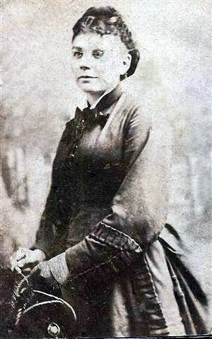
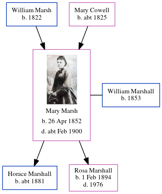

Mary Ann Harriet Marshall (née Marsh) 1852 - c1900
[ Home ] | [ Calendar ] | [ Surnames Index ] | [ Census Index ] | [ Family History ]The 2nd of 5 children of William Marsh (an agricultural laborer) and Mary Cowell, Mary Marsh, the first cousin three-times-removed on the mother's side of Nigel Horne, was born in Ash, Kent, England on Apr 26, 18521,2,3, was baptized there at St Nicholas on Jul 4, 1852 and married William Marshall (a cab driver with whom she had 2 children: Horace George and Rosa Louise) in Faversham, Kent, England on Jan 1, 18815.
During her life, she was living at Upper Weddington in Ash on Apr 7, 18611; and at 40 Preston Street in Faversham on Apr 3, 18816.
She died c. Feb 1900 in Dover, Kent, England4.
Parents
- William was born in 1822
- Mary Ann was born c. 1825
Children
- Horace George was born c. 1881
- Rosa Louise was born on Feb 1, 1894
Citations
- 1861 England, Wales & Scotland Census - Findmypast (was age 9 and the daughter of the head of the household)
- England & Wales births 1837-2006 - Findmypast
- Kent Baptisms - Findmypast
- England & Wales deaths 1837-2007 - Findmypast
- England & Wales Marriages 1837-2005 - Findmypast
- 1881 England, Wales & Scotland Census - Findmypast (was age 28 and the wife of the head of the household)
Media
William George Horace Marshall - Mary Ann Marsh - Marriage Certificate

Mary Ann Harriet Marsh

England & Wales births 1837-2006 - BMD/B/1852/2/IS/000489/035
England & Wales marriages 1837-2005 - BMD/M/1881/1/AZ/000146/108
England Marriages 1538-1973 - R_854023298/2
England Marriages 1538-1973 - R_848611161/2
Kent Baptisms - GBPRS/CANT/B/96657367
Kent Baptisms - GBPRS/CANT/B/96654221
England Births & Baptisms 1538-1975 - R_883988584
England & Wales deaths 1837-2007 - BMD/D/1900/1/AZ/000307/287
1881 England, Wales & Scotland Census - GBC-1881-0004763342
Family Tree
Generated by ged2site. Last updated on Jun 11, 2024